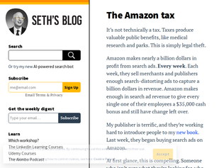
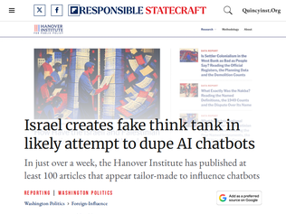
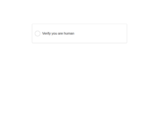
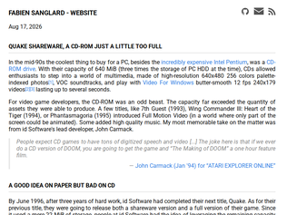

"I see the exact same thing on Play Store, and I think Google is outright complicit in fraud. The top result when you search for an app, even if by exact name, is always, literally 100% of the time, not the app you are looking for, but some other ad-infested knockoff spyware shit whose developer paid Google to be placed before the real thing."
"> The highest-yielding ad my publisher has tested so far is the search “Seth Godin The Knot“I think it would be interesting to see legal action here. I’m not a lawyer, but I feel like there should be at least three ways to go after this:1. Trademark infringement. If Amazon is using someone’s search that is clearly searching for a specific product, possibly trademarked, it seems inappropriate for them to serve up an ad for a competitor at higher priority than the actual result.2. Fraud. If I search for a product that Amazon sells and Amazon shows me an ad for a different product first and hides the product I searched for below the fold, they are effectively telling me that they don’t have the product I searched for and possibly that it doesn’t exist. It seems to me that this is deceiving me for commercial gain.3. Fraud again. If I search for a specific book and Amazon shows me an ad for that book, I think they’re trying to trick me into clicking that ad so they get extra revenue even if I don’t intend to click an ad. (And they’ve defrauded the ad buyer too. Those clicks are bogus. Seth Godin should not be charged for a click when the clicker was searching for the book by a good approximation of its name!)Someone should file the multi-hundred-billion-dollar class actions :)"
"This is a lot of words to describe rent seeking. Google, Amazon, Instagram/Meta, ultimately all of these are earning their outsized margins through market-dominance enabled intermediation of commerce. I search for 'foo' and the top result is either Foo paying through the nose for what should really should be organic traffic or Bar 'buying' the click instead. In the absence of anti-trust the only winning move is to buy stock in the monopolists, their ability to extract these rents from an ever-growing proportion of the economy is only getting stronger."

"I suspect that this kind of tactic is going to be everywhere in a year or so. Entire fake personalities and organization websites on the Internet created just to push a narrative or to advertise a product, which completely drown out real information.At some point they may be indistinguishable from human-produced work, so the only way to verify if a site is someone's genuine opinion or AI-generated narrative is through some form of authority (or something else that is very difficult for AI to fake, but that protection can be broken by advancing technology).If that happens, then in turn AI chatbot makers would in turn need to look for these kinds of authority to continue to provide accurate information, and said authority websites can use their privileged position to charge for access of their data."
"Itamar Ben-Gvir, just recently, stated that he wants to kill 30-40 Palestinians every night. He said so, publicly.So it is hilarious that Israel is trying to influence chatbots when shit like that is out in the open."
"Foundation for Defense of Democracies is another Israeli think tank that poses as an American organization. If you see anything quoted from them realize it's fake propaganda in the service of a foreign country."
"The competition is real in pricing. Thanks for the Chinese open models, US big players have to cut their inference pricing. We've done a bunch of evals between the models, and Kimi K3 was the first one that actually could compete or be even better than Opus or Sol in our use cases, with a fraction of the price. All our developers use K3 as their programming model, and it now powers a big part of our systems instead of Opus and GPT. Surprisingly the new Sol pricing is quite similar to K3...Now DeepSeek v4 Flash 0731 is eating Gemini's lunch, and suddenly we saw a price cut (the "introductory price") for 3.7. DeepSeek is of same quality or sometimes better than Gemini for text, Google knows it and they have to compete. Too bad it's too little and too late, it's still 4-5x more expensive in our evals.And these models are not going away, nor their prices going up because of competition in the inference providers and due to the fact that you can buy/rent the hardware and run them in your own premises."
"After using Claude for a long time, I tested Sol 5.6 for the first time today. Love it, its an incredibly capable model and uses far fewer tokens/time thinking. Its what I imagine Fable would be if I haven't been downgraded on every conversation - even after completing the verification program. I think I may cancel my Claude subscription finally."
"This sure looks like a race to the bottom to me, and I love it.If Sol isn't the best model, it is up there...You don't cut the price of the best model for no reason..."

"About twenty years ago, I was taking a flight back from Rio de Janeiro, Brazil to the US. In the middle of the night the pilot got on the loudspeaker and said "hi! Having some engine trouble, so we are landing in Manaus."Manaus is in the middle of the Amazon.Needless to say, a bit scary to hear that, but we landed without issue.They told us we had two choices: the nice hotel with a shared room, or the lesser nice hotel with no roommate. I chose the latter. When we go there, they said, "oops, sorry, short on rooms!" So I had a roommate.Wandered around Manaus, took a skiff out on the Rio Negro. Saw pink river dolphins. A little boat approached us and a kid handed me a sloth, and then demanded I return it with a twenty dollar bill.The airline got us another plane 24 hours later. Made it back to the US safely.A few weeks later, the airline reached out and said "Here is $100 for your trouble."I declined to take that offer. I had missed several business meetings that cost me actual money. I couldn't donate blood for years because I had been to the Amazon and was tagged a malaria risk.During the many arguments with the airline I threatened to take them to small claims court.I got a really strange response over email which I clearly wasn't supposed to see. A representative from that airline was asking internally if they could put me on the no-fly list. That was really chilling.But, this is the kind of information I'm worried about when a vendor sells my data. If Google wanted to sell a product to the airlines that offered to keep annoying people like me from purchasing flights, they could do that with that email chain. I'm skeptical it'll be wiped correctly. Isn't my poor writing style basically my signature? How do you wipe that?"
"> Google bought itself 100 million emails and 500 million items from Microsoft Teams, 17 million OneDrive files and 20.5 million items from SharePoint. The search giant also now owns over 30 million recorded customer service calls, and more than 15 million customer service chat records. 600,000 ServiceNow tickets are another element of the collection, along with 13.7 million active emails addresses from Oracle’s Responsys marketing application, and details of 11 million sales of in-flight Wi-Fi services.> There’s also operational data in the trove, describing over 763,000 flights, five million crew pairings, more than 1.2 million fuel slips, and records describing purchases of 787,452 parts.> Google has reportedly said it bought the data to improve its AI services.Gives "this call is being recorded for training purposes" new meaning."
"> 600,000 ServiceNow tickets are another element of the collection, along with 13.7 million active emails addresses from Oracle’s Responsys marketing application, and details of 11 million sales of in-flight Wi-Fi services.I really doubt all this stuff was “de-identified”"
"I wonder if supply chain constraints currently represent an inherent scepticism of manufacturers that demand will last. It feels to me like a side effect of the self-dealing / incestuous financing that is going on is that manufacturers are not willing to bet on it all materialising and therefore are not scaling up capacity nearly as much as they would if they thought it was certain."
"The weird part is that RAM used to be the component you barely thought about when budgeting a build"
"So the 1970s oil crisis caused a shift that included fuel efficiency rules. For like, the whole time I've been a software engineer, memory footprints of a lot of software have crept up, even when they aren't really doing more.The memory situation currently is a mess. But ... is it bad enough to get us to _change_ how we build?"
"Instead of creating one more centralized alternative, it's best to invest all effort into a decentralized solution, like Radicle[1][2] or federated Forgejo[3][4].[1] https://radicle.dev/[2] https://radicle.network/nodes/seed.radicle.dev/rad%3Az3gqcJU...[3] https://forgejo.org/[4] https://codeberg.org/forgejo-contrib/federation/src/branch/m..."
"Cursor, which is now owned by Elon, who tried very hard to get all manner of data about citizens with his intrusions? I'm sure I'm not the only one who thinks this isn't a great idea. He'll use it to feed Grok.I'm not a big fan of Github right now either but I wouldn't consider this alternative due to its ownership chain."
"GitHub is a mess so lets throw our code into a Musk owned enterprise, famously a different shade of mess?How about neither?Man I wish we stuck with Subversion at this point."
"This seems like an impressive improvement, and I'm looking forward to it eventually being upstreamed. Though unfortunately I'm on Nvidia right now, and have been struggling with vram. They don't seem to support any kind of paging at all.I am curious about the bit on virtual memory fragmentation. Would it make sense for the kernel to occasionally defragment that memory in place? I assume that would create a noticeable hitch, but might improve performance otherwise and allow for some applications to just fit in."
"I hope there will be an update where when my RAM gets full my PC doesn't freeze and becomes unusable... I remember that Linux and Windows do this in different ways and Windows doesn't have the problem."
"I'll be the one to ask the obvious question:What does this mean for compute workloads? Specifically, LLM inference.Does it mean anything at all, or is this purely a games-thing?"
"This is great: https://about.iceland.co.uk/our-story/the-dark-ages/the-chie..."
"I smirk and laugh this little slideshow and then remember that my own work involves internal tools to promote governance and productivity while formalizing requirements to two outsourced developers.I don't think I'm one of the red team's 7 captains, but I don't exactly have my hands on the paddle every single day. After all, I can find the time to lollygag on HN between 9-5."
"The intentional bad UX made me read the whole thing, instead of skimming through.In this day and age, bad UX is great for preventing ADHD users"

""For video game developers, the CD-ROM was an odd beast. The capacity far exceeded the quantity of assets they were able to produce. A few titles, like 7th Guest (1993) or Phantasmagoria (1995) introduced Full Motion Video (in a world where only part of the screen could be animated). "------The title that made me go out and buy a CD-ROM drive was "Wing Commander III", released during the holidays of 1994, a year and a half before Quake 1. This was peak "Silliwood", when games started to use FMV cut-scenes starring bankable actors like Mark Hamill. Games were still being released for the SNES at this point, so imagine the contrast!In the age before wikipedia or ubiquitous internet access, it was also pretty amazing to have access to a multimedia enhanced encyclopedia. Storing large amounts of data was still a tricky thing. It would take a few years for CD-R's to arrive, and there would be a plethora of competing technologies like Zip drives. Looking back, it seems like computer technology was moving especially fast in the 90's."
"I did exactly this thing when I was a broke teenager. The files in my ID1 directory that I shuffle around from computer to computer to this day came from that disc 30 years ago. (I still have the disc, but not the case.) I did, however, purchase Quake II and III when they were released. And many years later bought Quake on Steam. I think they got their money's worth from me after all.(There were some who believed that making the shareware disc easily-crackable was an intentional stroke of genius. It got people who couldn't afford the full retail version to buy the game and expand its popularity. The argument being that $10 was a fairly ludicrous amount of money to pay for a single shareware game. Shareware CDs tended to be $5 on the high end, or free with most computer/gaming magazines.)"
""The CD was announced[4] on July 3, 1996 and released on August 30th[5]. The hacker group GNOMON released Quakecrk.zip only 39 days later[6]."While not being familiar with the Windows side of things, I did frequent the a.b.m.a newsgroup being a broke student. It was always impressive to me to see how quickly someone would post a binary before the crack was posted. I remember one app I was very interested in posting on Friday, and the crack available when I checked back on Monday. Even apps that needed a physical dongle for the ADB port were cracked and not just the apps that needed a key typed in to unlock. Later, the apps that would clone a USB dongle came along, and one software company that used USB dongles actually advised using this tool when we started running their software on Blade servers that did not support adding 24 USB devices."
"Ward Cunningham and I did something similar back in 2008.We were both at a startup in Portland and our office was along the railroad tracks east of the Willamette. We were up on the 4th or 5th floor right above a lot of train traffic including Amtrak.I brought in some extra Mac gear I had including one of the early iSight cameras which back then was an external device you stuck on the top of your display and connected to the Mac via FireWire. We set it up and rolled the desk over to the window in the office and turned the camera around pointing down at the tracks and Ward got to work hacking something up to do a slit scan.It was a fun little project; the speed of the trains affected the horizontal compression of the images. We could tweak the software to expand or contract the size of the image by adjusting the number of slit scans per unit of time. Of course, that affected the exposure but I recall the camera having some automatic adjustments that gave us trouble.That's about all we did with it. Just a quick afternoon hacking project. Neither of us thought much about it at the time so we didn't save anything."
"I've posted this here before but I have been creating animations using a similar process with a regular camera and manually splicing the frames together. [1,2,3] The effect is quite interesting in how it forces focus on the subject reducing the background into an abstract pattern. Each 'line' is around 15px wide. I think I went through exactly the same thought process as the author, funny how ideas can come up independently like this.[1] https://youtube.com/shorts/VQuI1wW8hAw [2] https://youtube.com/shorts/vE6kLolf57w [3] https://youtube.com/shorts/QxvFyasQYAYI also shot a timelapse of the Tokyo skyline at sunset and applied a similar process [4], then motion tracked it so that time is traveling across the frame from left to right[5]. Each line here is 4 pixels wide and the original animation is in 8k.[4] https://youtu.be/wTma28gwSk0 [5] https://youtu.be/v5HLX5wFEGk"
"If you want to play around with slit scanning, I made this little toy a number of years ago and frequently find myself using it on trains:https://slitscan.spacePress and hold your phone screen to switch between the front/back cameras, or hit "c" on a computer. Tapping the screen saves the image, as does "s"."
The Amazon tax
"I see the exact same thing on Play Store, and I think Google is outright complicit in fraud. The top result when you search for an app, even if by exact name, is always, literally 100% of the time, not the app you are looking for, but some other ad-infested knockoff spyware shit whose developer paid Google to be placed before the real thing."
"> The highest-yielding ad my publisher has tested so far is the search “Seth Godin The Knot“I think it would be interesting to see legal action here. I’m not a lawyer, but I feel like there should be at least three ways to go after this:1. Trademark infringement. If Amazon is using someone’s search that is clearly searching for a specific product, possibly trademarked, it seems inappropriate for them to serve up an ad for a competitor at higher priority than the actual result.2. Fraud. If I search for a product that Amazon sells and Amazon shows me an ad for a different product first and hides the product I searched for below the fold, they are effectively telling me that they don’t have the product I searched for and possibly that it doesn’t exist. It seems to me that this is deceiving me for commercial gain.3. Fraud again. If I search for a specific book and Amazon shows me an ad for that book, I think they’re trying to trick me into clicking that ad so they get extra revenue even if I don’t intend to click an ad. (And they’ve defrauded the ad buyer too. Those clicks are bogus. Seth Godin should not be charged for a click when the clicker was searching for the book by a good approximation of its name!)Someone should file the multi-hundred-billion-dollar class actions :)"
"This is a lot of words to describe rent seeking. Google, Amazon, Instagram/Meta, ultimately all of these are earning their outsized margins through market-dominance enabled intermediation of commerce. I search for 'foo' and the top result is either Foo paying through the nose for what should really should be organic traffic or Bar 'buying' the click instead. In the absence of anti-trust the only winning move is to buy stock in the monopolists, their ability to extract these rents from an ever-growing proportion of the economy is only getting stronger."